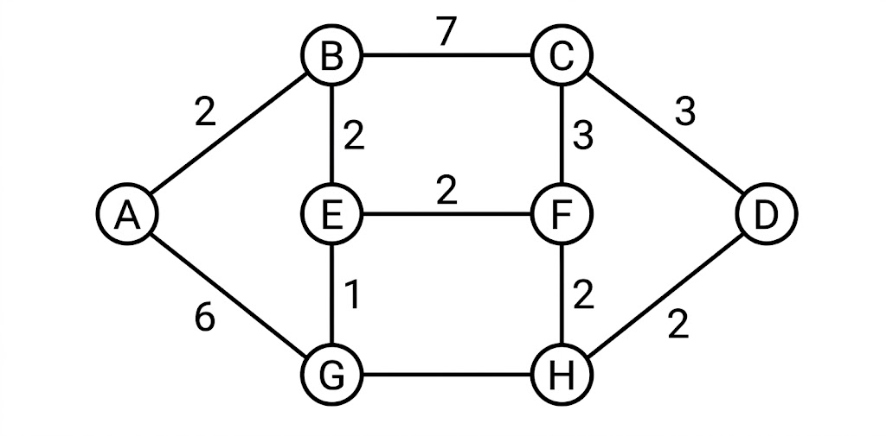

B.Tech. IV Semester
Examination, December 2024
Grading System (GS)
Max Marks: 70 | Time: 3 Hours
Note:
i) Attempt any five questions.
ii) All questions carry equal marks.
a) Solve the following recurrence relation
$T(n)=7T(n/2)+cn^{2}$ (Unit 1)
b) Show how quick sort sorts the following sequence of keys 65, 70, 75, 80, 85, 60, 55, 50, 45. Solve the recurrence relation of quick sort using substitution method. (Unit 1)
a) Explain merge sort algorithm and find the complexity of the algorithm. (Unit 1)
b) Write an algorithm for single source shortest path and apply it for the following graph.

(Unit 2)
a) How the Optimal Merge Pattern algorithm works? Explain with a suitable example. (Unit 2)
b) Apply Kruskal's algorithm to find the minimum spanning tree of a graph with weighted edges.
![An undirected weighted graph with 9 vertices labeled 0 through 8. The edges and their corresponding weights are as follows: Edge 0 to 1 with weight 4; Edge 0 to 7 with weight 8; Edge 1 to 2 with weight 8; Edge 1 to 7 with weight 11; Edge 2 to 3 with weight 7; Edge 2 to 5 with weight 4; Edge 2 to 8 with weight 2; Edge 3 to 4 with weight 9; Edge 3 to 5 with weight 14; Edge 4 to 5 with weight 10; Edge 5 to 6 with weight 2; Edge 6 to 7 with weight 1; Edge 6 to 8 with weight 6; and Edge 7 to 8 with weight 7.](ques-diagrams/Q.3b-dec-3a-june-2024.png)
(Unit 2)
a) What is multistage graph problem? Discuss its solution based on dynamic programming approach. Also give a suitable algorithm and find its computing time? (Unit 3)
b) Compute the optimal solution for knapsack problem using greedy method $N=5$, $M=10$, $(p_{1}, p_{2}, p_{3}, p_{4}, p_{5}) = (10, 15, 10, 12, 8)$, $(w_{1}, w_{2}, w_{3}, w_{4}, w_{5}) = (3, 3, 2, 5, 1)$. (Unit 2)
a) Design a three stage system with device types $D_{1}$, $D_{2}$ and $D_{3}$. The costs are \$30, \$15 and \$20 respectively. The Cost of the system is to be no more than \$105. The reliability of each device is 0.9, 0.8 and 0.5 respectively. (Unit 3)
b) Briefly explain the Hamiltonian cycle using backtracking with a example. (Unit 4)
Solve the following instance of travelling sales person problem using Branch Bound.
| $\infty$ | 20 | 30 | 10 | 11 |
| 15 | $\infty$ | 16 | 4 | 2 |
| 3 | 5 | $\infty$ | 2 | 4 |
| 19 | 6 | 18 | $\infty$ | 3 |
| 16 | 4 | 7 | 16 | $\infty$ |
(Unit 4)
a) Explain the P, NP-Hard and NP-complete classes? Give the relation between them. (Unit 5)
b) Explain the purpose of design and complexity of parallel algorithms in detail. (Unit 5)
Write short notes on any two of the following:
a) Logic Optimization (Unit 1)
b) Optimal merge patterns (Unit 2)
c) Data Transfer Optimization (Unit 1)
d) 8 queen's problem using backtracking (Unit 4)